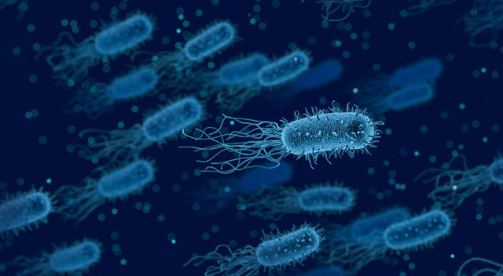

Vad är magsår?
Magsår (ulkus pepticum) är sår i slemhinnan (mukosa) i magen eller i övre tolvfingertarmen (duodenum). Typiskt för magsår är att de återkommer igen och igen. Cirka 75 % risk för att en person som har haft magsår får ett nytt sår inom ett år. Vi använder därför termen ulkussjukdom för sår i magsäcken och tolvfingertarmen.
Magsår uppfattas i dag vara en infektionssjukdom som orsakas av bakterien Helicobacter pylori (Hp) – magsårsbakterien. Vi uppskattar att 99 % av sår i tolvfingertarmen (duodenalsår) och 75 % av alla magsår (ventrikelsår) orsakas av infektion i slemhinnan med Hp. 25 % av sår i magsäcken beror på frätande effekt av läkemedel som innehåller salicylater och NSAID på slemhinnan i magen.